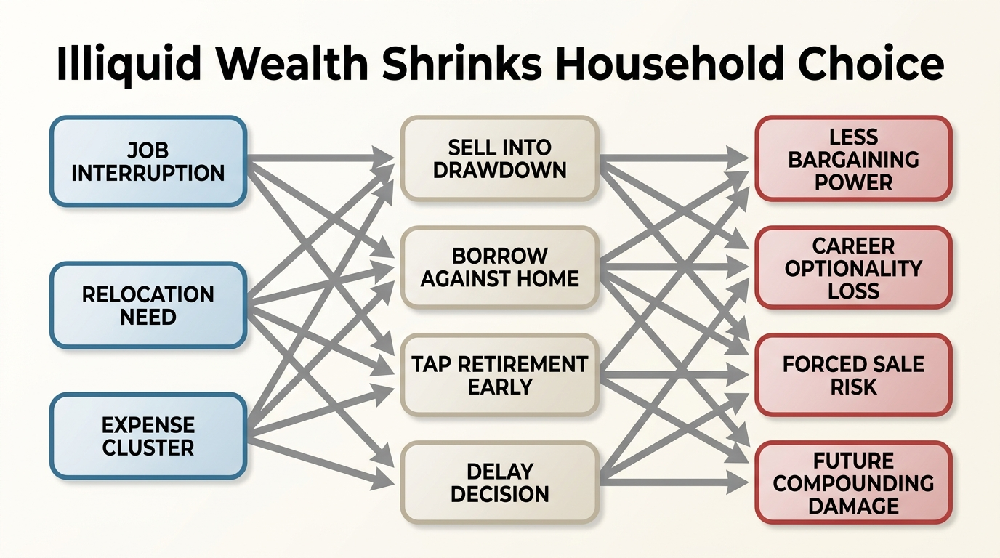

The Asset-Rich, Cash-Poor Paradox
A household can look wealthy on paper and still have very little room to maneuver. The gap appears when most apparent wealth sits inside home equity, retirement wrappers, private business value, or concentrated market exposure while the obligations that arrive next month still demand cash, not theoretical net worth. Wealth and resilience overlap, but they do not move on the same clock.
The most common mistake is to treat net worth as if it were already usable defense. Net worth is a stock measure. Household resilience is a timing problem. If a family needs to absorb a job gap, relocation, deductible cluster, or family emergency, the relevant question is not whether assets exist. The relevant question is how fast those assets convert, how much value survives conversion, and whether the move creates a second problem through taxes, credit dependence, or future compounding loss.
Core thesis: the asset-rich, cash-poor paradox is not about households lacking wealth. It is about households holding the wrong kind of wealth for the timescale of the shocks they are exposed to. Home equity, retirement balances, and private business value can be substantial and still fail the first-responder test.

The Official Data Still Shows A Thin Cash Layer
The Federal Reserve's May 2025 report on the economic well-being of U.S. households found that 63 percent of adults said they would cover a hypothetical $400 emergency expense exclusively with cash or its equivalent in 2024. The same report found that 55 percent said they had set aside money covering three months of expenses in a rainy-day fund. Those figures are not trivial. They are also not reassuring enough to support the common story that rising aggregate wealth solved ordinary household fragility.
The gap becomes more obvious once the composition of household wealth enters the picture. The Richmond Fed's 2023 review of Survey of Consumer Finances data showed that families in the middle of the wealth distribution hold much of their wealth in real estate, while families higher in the distribution hold much more in stocks and private business equity. This means many households that appear asset-rich are holding wealth inside structures that are slow, costly, or strategically painful to mobilize.
The distinction matters because a balance sheet can improve while cash resilience stays weak. A household may own a valuable house, accumulate large pretax retirement balances, or sit on a private-company stake and still have very little immediately spendable defense. The asset side is real. The conversion quality is separate, and the error usually appears only when the household is forced onto a deadline.
Home Equity Is Wealth, Not Cash
Home equity is the most common source of confusion. It feels tangible, large, and stable enough to count as protection. Yet equity usually becomes usable only through selling, refinancing, or taking a second claim on the property. Each route depends on time, underwriting, market conditions, and tolerance for a new financing burden. None behaves like cash sitting in reserve.
The Consumer Financial Protection Bureau's own HELOC guidance makes the conditional nature of this liquidity explicit. A HELOC is a line of credit against home equity, not owned cash. Access can depend on the lender's assessment of the home value and the borrower's financial circumstances, and repayment costs can jump when the draw period ends. A household that counts unused borrowing capacity as stored liquidity is counting rented flexibility as if it were owned reserves.
The New York Fed's February 10, 2026 release on household debt and credit reported that HELOC balances increased to $434 billion in the fourth quarter of 2025, continuing the expansion that began in 2022. The signal here is not that home equity became liquid. The signal is that more households are leaning on conditional borrowing to turn illiquid housing wealth into spendable cash while preserving older low-rate first mortgages. That is a useful option. It is still leverage, not free conversion.

Retirement And Business Wealth Often Fail The First-Responder Test
Retirement assets create the same confusion in a different form. They are real wealth in any long-horizon plan, but they are poor first responders to a near-term disruption. Taxes, penalties, plan rules, and future compounding loss all weaken their usefulness when the problem is immediate. A retirement account is strategic capital. It should not be treated as ordinary cash in a household defense model.
Private business value and concentrated stock positions can be even less reliable. A founder may control significant paper wealth and still need a financing event to fund household flexibility. An employee may hold a large single-name position and still face a brutal choice between liquidity and concentration risk. In both cases the household can look wealthy while remaining fragile in the one dimension that governs actual bargaining power: time bought without forced concessions.
The Real Cost Is Lost Optionality
The asset-rich, cash-poor paradox is not only a personal-finance irritation. It is a strategic constraint. A household with thin liquid reserves may reject a career transition, delay a move, avoid an attractive but uncertain opportunity, or accept bad terms in order to protect assets that exist mainly on a slower clock. This is why the topic belongs inside wealth architecture rather than emergency-fund advice alone.
The paradox also feeds fixed-cost drift. Rising paper wealth creates permission for larger homes, higher recurring commitments, and more expensive routines. Those commitments then land on the cash-flow layer. When a real shock arrives, the family is not saved by the large top-line net-worth number because the shock is arriving on a monthly budget timeline while the wealth is trapped inside slower assets.
Why Higher-Rate Conditions Made The Paradox Harder To Hide
Near-zero-rate assumptions once allowed households to act as if conversion friction was temporary and mostly cosmetic. If cash ran thin, refinancing, margin capacity, or a home-equity line often looked like a neutral bridge rather than a costly choice. That environment compressed the visible penalty for holding illiquid wealth structures. Higher rates did not create the paradox. They removed a layer of camouflage.
This matters because the same balance sheet can behave very differently across funding regimes. A house, brokerage account, or business stake can support flexibility in a low-friction credit environment and then become much less useful once borrowing costs rise or lenders tighten terms. The household therefore needs to classify liquidity quality, not only asset ownership. A strong nominal balance sheet with rented liquidity is still more fragile than it looks.
Known, Inferred, And Unknown
| Category | Assessment |
|---|---|
| Known | In 2024, 63 percent of adults said they would cover a $400 emergency expense with cash or its equivalent, and 55 percent said they had rainy-day savings covering three months of expenses. |
| Known | Survey of Consumer Finances work shows that middle-wealth households hold much of their wealth in real estate rather than immediately spendable assets. |
| Known | HELOC balances reached $434 billion in Q4 2025, showing continued use of conditional borrowing against housing wealth. |
| Inferred | The spread between paper wealth and usable shock defense remains large enough that many households overestimate their resilience by reading net worth as liquidity. |
| Unknown | How many apparently affluent households would still look resilient after applying realistic timing, tax, drawdown, and financing haircuts to their largest assets. |
A Better Household Audit
- Separate owned liquidity from conditional liquidity. Cash and near-cash reserves should sit in a different category from HELOC access, margin capacity, or other lender-controlled lines.
- Measure defense in months of full outflow. Use the household's actual spending base, not symbolic emergency-fund slogans detached from real obligations.
- Apply haircuts to slow assets. Home equity, retirement balances, and private-company value should be discounted for time, taxes, and execution risk.
- Model joint shocks. Income loss, lower asset prices, and tighter credit often arrive together rather than one at a time.
- Treat optionality as part of wealth. The ability to wait, move, negotiate, and absorb family disruption without forced selling is a real asset even though dashboards rarely price it clearly.
For WealthMeter readers, the correction is simple and uncomfortable. Stop asking only how much the household owns. Ask which part of the balance sheet can buy time without creating another liability, repricing the next year, or forcing a distressed sale. That answer is usually smaller than net worth. It is also much closer to the number that determines whether wealth behaves like freedom or merely looks impressive on a screen.
Further Reading Inside The Site
This article connects directly to The Liquidity Illusion, The Career Optionality Gap, and The Hidden Costs of Ownership. Together they show that household resilience depends less on paper valuation than on conversion quality and preserved choice.
Source List
Board of Governors of the Federal Reserve System. Report on the Economic Well-Being of U.S. Households in 2024: Savings and Investments. Published May 2025.
Board of Governors of the Federal Reserve System. Survey of Consumer Finances. 2022 survey materials and summary results published October 18, 2023.
Jones J, Neelakantan U. Portfolios Across the U.S. Wealth Distribution. Richmond Fed Economic Brief. 2023.
Consumer Financial Protection Bureau. What is a home equity line of credit (HELOC)? Last reviewed June 27, 2024.
Federal Reserve Bank of New York. Household Debt Balances Grow Modestly; Early Delinquencies Level Out for Non-Housing Debts. Published February 10, 2026.